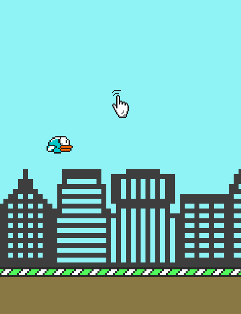
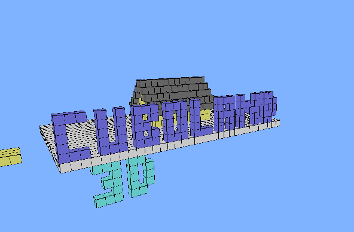
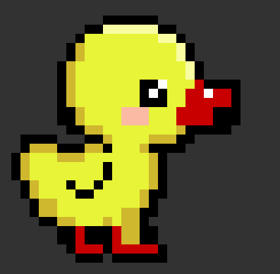

Encuentra las minas ocultas sin que exploten. Clásico juego de buscaminas en el que cada casilla muestra un número con la cantidad de minas que se encuentran alrededor. Los números indican el número de minas que hay en las casillas adyacentes.
Python

FlappyBirds
Flappy Bird es un icónico juego de desplazamiento lateral en el que tienes que hacer clic para esquivar los obstáculos.
Python

Cuboland 3D
Cuboland es un juego de construcción en 3D, inspirado en el famoso juego "Minecraft". Mundo repleto de cubos de colores personalizados, para la construcción de ciudades, figuras, zona de parkour, texto en 3D y todo lo que nuestra mente pueda imaginar, no existen límites.
Python

PixelArt
El pixel art o arte de píxel es una forma de arte digital, creada a través de una computadora mediante el uso de programas de edición de gráficos rasterizados, donde las imágenes son editadas al nivel del píxel.